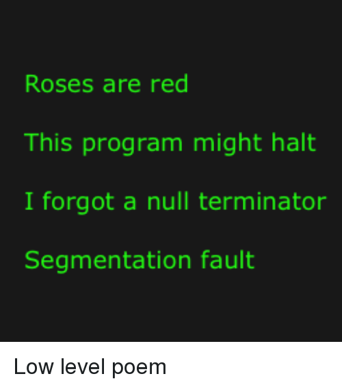

The FitnessGram™ Pacer Test is a multi-stage aerobic capacity test that
progressively gets more difficult as it continues.
The 20-meter Pacer test will begin in 30 seconds. Line up at the start.
The running speed starts slowly, but gets faster every
minute after you hear this signal: *music* A single lap should be
completed every time you hear this sound: *music* The second
time you fail to complete a lap, your test is over. The test will begin
on the word "start". Ready? Set? Start.
